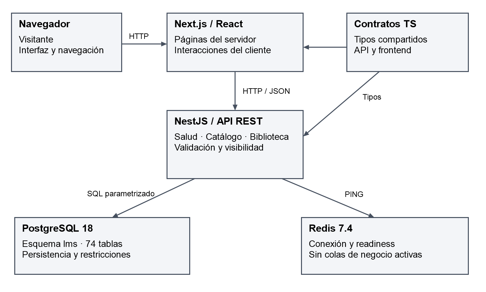
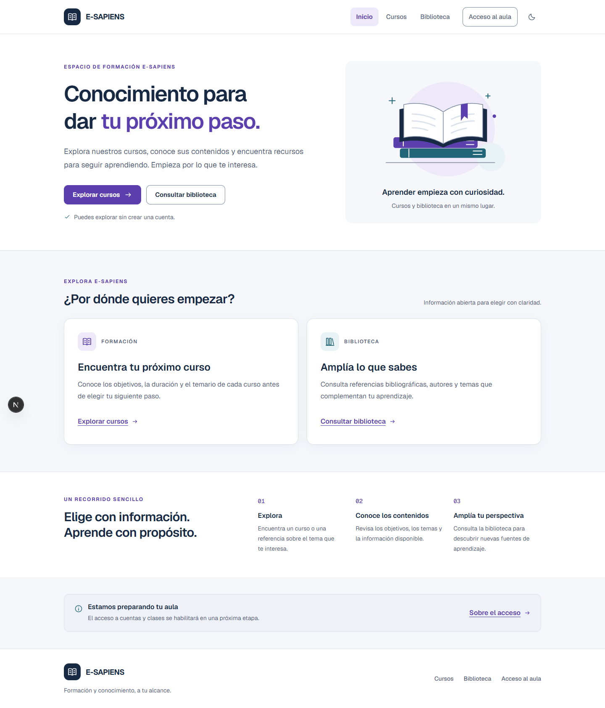
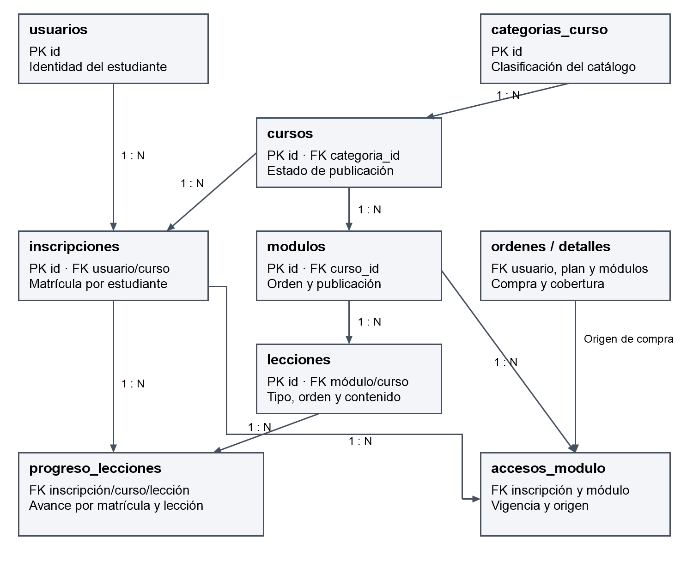
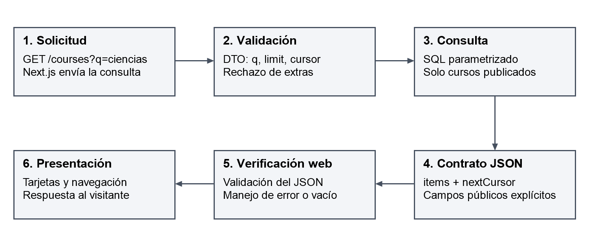
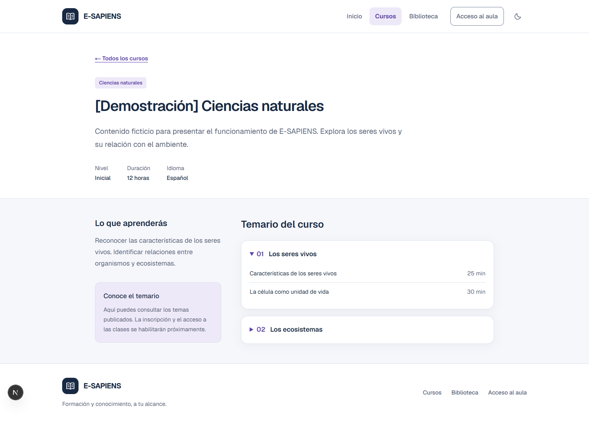

E-SAPIENS: análisis, arquitectura e implementación inicial de una plataforma web de aprendizaje
Kevin Tapia Ali
Ingeniería de Sistemas, Universidad Católica Boliviana
Tecnologías Web II
Ing. Pacheco
3 de octubre de 2026
Índice
Resumen
Introducción y método de revisión
1. Objetivo general
1.1.
Objetivos de rendimiento y escalabilidad
2. Alcance del proyecto
2.1.
Módulos funcionales incluidos
2.2. Exclusiones del alcance
2.3.
Viabilidad para un único desarrollador
3. Definición del dominio del
proyecto
3.1. Lenguaje ubicuo
3.2. Contextos delimitados
3.3.
Análisis de agregados
4. Arquitectura general
4.1. Diagrama
conceptual de arquitectura
4.2. Decisiones de diseño críticas
5.
Seguridad del sistema
5.1. Autenticación y gestión de sesiones
5.2.
Control de acceso basado en roles
5.3. Seguridad del contenido y
acceso a activos
5.4. Prevención de ataques comunes
6. Base de
datos
6.1. Esquema entidad–relación detallado
6.2. Estrategias
de optimización y migración
7. Implementación del núcleo de la API
7.1.
Server Actions y responsabilidad del backend
7.2. Servicio de carga:
análisis de la API REST auxiliar
7.3. Servicio de correo: API REST de
notificaciones
7.4. Pruebas, integración continua y evidencia
7.5.
Configuración y ejecución reproducible
8. Conclusiones y hoja de ruta
técnica
8.1. Conclusiones
8.2. Hoja de ruta priorizada
8.3.
Riesgos, dependencias y decisiones de la reunión
Referencias
Apéndice
A. Correspondencia con el índice proporcionado
Apéndice B. Inventario
del esquema relacional
Apéndice C. Guion de demostración y evidencias
E-SAPIENS es un proyecto de plataforma web de aprendizaje orientado a centralizar cursos, temarios y recursos bibliográficos, con una evolución prevista hacia la gestión de usuarios, el aula virtual y los procesos académicos y comerciales. Este informe analiza su primera entrega funcional mediante la revisión del código fuente, el esquema relacional, la documentación técnica, las pruebas y la integración continua. La solución utiliza Next.js para la presentación, NestJS como API central, PostgreSQL para persistencia, Redis para comprobación de disponibilidad y un monorepositorio coordinado con pnpm y Turborepo. Al corte del 3 de octubre de 2026, se encuentran implementados el catálogo público, los detalles de cursos, la biblioteca, la búsqueda, la paginación y una interfaz adaptable con temas claro y oscuro. La versión se publicó en GitHub y superó las verificaciones automatizadas; las pruebas locales registran dos casos unitarios y diecisiete de integración. El esquema contiene 74 tablas y 26 funciones, aunque varios dominios todavía no tienen casos de uso expuestos por la API. La principal conclusión es que existe una base ejecutable y reproducible para continuar el desarrollo individual, pero la operación empresarial requiere completar autenticación, autorización, aula, seguridad operativa y validación de carga. El informe propone prioridades y criterios de aceptación acordes con la ausencia de presupuesto asignado y la infraestructura aún no confirmada.
Palabras clave: plataforma educativa, LMS, monolito modular, Next.js, NestJS, PostgreSQL.
El proyecto responde a la necesidad de organizar la oferta formativa y los materiales de E-SAPIENS mediante una aplicación web comprensible para visitantes, estudiantes y personal académico. Su desarrollo también permite demostrar competencias de Tecnologías Web II: comunicación frontend–backend, diseño de API, persistencia relacional, validación, pruebas y gestión del código fuente. Se distinguen dos interlocutores: el Ing. Pacheco, en el ámbito académico, y el Ing. Pablo Rivero, como interlocutor de los requisitos y de la presentación del avance.
Se utilizó una revisión técnica documental del repositorio KevinTapiaAli/E-SAPIENS, complementada con la consulta de documentación oficial y la evidencia de verificaciones realizadas. El corte de esta edición es el 3 de octubre de 2026, en la zona horaria America/La_Paz. La versión analizada corresponde al commit cefb5a6423d8178e9e371a09ffb3a8b381150cd7 de develop. El pull request número 1 se integró el 2 de octubre y la ejecución posterior de GitHub Actions finalizó correctamente. Estos resultados respaldan la reproducibilidad del avance, sin constituir una prueba de aceptación empresarial o un estudio de capacidad (KevinTapiaAli, 2026a, 2026b).
Las fotografías entregadas presentan un índice temático, sin ponderaciones ni descriptores de calificación visibles. Por ello, se conserva su secuencia de ocho capítulos y se añade una matriz de correspondencia en el apéndice A. Los nombres Server Actions, microservicio de carga y microservicio de correo se analizan como criterios de comparación; no se atribuyen al sistema componentes que todavía no existen. No se dispone de evidencia para calcular una nota ni un porcentaje global de finalización.
En este documento, implementado significa que existe código ejecutable asociado al flujo; definido en el esquema significa que existen tablas o funciones SQL, pero no necesariamente una interfaz de aplicación; y propuesto significa que la capacidad está documentada para una entrega posterior. Se emplean citas autor–fecha, referencias y presentación de tablas y figuras conforme a APA 7. Los capítulos numerados y el índice se conservan para facilitar la correspondencia con la guía académica (Purdue Online Writing Lab, s. f.-a, s. f.-b).
Desarrollar progresivamente una plataforma web de aprendizaje para E-SAPIENS que centralice la oferta de cursos y recursos bibliográficos, y que evolucione hacia la administración segura del acceso académico, el seguimiento del aprendizaje y la operación institucional, mediante una arquitectura modular, pruebas verificables y documentación mantenible por un único desarrollador.
Para la entrega actual, el objetivo verificable es ofrecer una experiencia pública completa de exploración: acceder al catálogo, buscar cursos, consultar un temario publicado y revisar fichas bibliográficas. La aceptación de este alcance exige que la aplicación lea información de PostgreSQL a través de NestJS y no exponga contenido privado, borradores ni credenciales.
La escalabilidad se plantea como una capacidad que debe medirse y mejorarse de manera incremental. Todavía no se conoce la cantidad de estudiantes simultáneos, el volumen final del catálogo, el hardware disponible ni la demanda de video. Por tanto, no se afirma que el sistema soporte una cifra determinada de usuarios. La tabla 1 separa las decisiones implementadas de los objetivos propuestos para una evaluación posterior.
Tabla 1
Objetivos técnicos y criterios de evaluación
| Dimensión | Base actual | Criterio posterior propuesto |
|---|---|---|
| Respuesta de catálogo | Listas de 12 elementos por defecto y máximo de 24; cursor UUID. | Medir latencia p50/p95/p99 con datos representativos; acordar umbrales con la organización. |
| Uso de PostgreSQL | Pool de hasta 10 conexiones por proceso de API. | Dimensionar el total de conexiones según réplicas y capacidad real de la base. |
| Control de espera | Conexión SQL: 3 s; sentencia: 5 s; consulta cliente: 6 s; petición web: 8 s. | Tratar estos valores como límites de espera, no como resultados de rendimiento. |
| Concurrencia | No existe prueba de carga documentada. | Definir N usuarios simultáneos y verificar carga sostenida, picos y recuperación. |
| Disponibilidad | Endpoints de salud y readiness. | Acordar horario de servicio, monitoreo, responsable e indicadores de recuperación. |
| Accesibilidad | Contraste de tokens, foco y revisión adaptable. | Auditar flujos completos con teclado y tecnologías de asistencia antes de afirmar conformidad. |
Nota. Elaboración propia a partir del repositorio E-SAPIENS, versión cefb5a6 (KevinTapiaAli, 2026a).
La política propuesta es optimizar primero consultas y recursos del monolito modular. Solo si una medición identifica un límite independiente se evaluará separar un servicio, agregar caché o aumentar réplicas. La extracción de microservicios exige un registro de decisión arquitectónica que cuantifique beneficio y costo operativo. Esta restricción reduce la complejidad para el desarrollo individual.
El alcance general comprende identidad, autoría de contenido, aprendizaje y operación comercial. La entrega pública representa una parte de ese producto. La tabla 2 permite distinguir la existencia de soporte relacional de la disponibilidad de un flujo funcional para una persona usuaria.
Tabla 2
Alcance funcional y estado de implementación
| Módulo | Responsabilidad | Estado al corte |
|---|---|---|
| Identidad y acceso (IAM) | Registro, aprobación, sesiones, roles y recuperación. | Tablas y políticas previstas; API y pantallas funcionales pendientes. |
| Autoría y cursos (CMS educativo) | Clasificación, publicación, módulos, lecciones y revisión editorial. | Lectura pública implementada; edición y administración pendientes. |
| Biblioteca | Fichas, autoría, referencias, temas y acceso a versiones. | Consulta pública implementada; carga y descarga privada pendientes. |
| Experiencia de aprendizaje (LXP) | Matrícula, vigencia, progreso y navegación del aula. | Modelo relacional y funciones existentes; flujo web pendiente. |
| Evaluación y docencia | Exámenes, tareas, entregas y retroalimentación. | Soporte SQL existente; casos de uso y controles de aplicación pendientes. |
| Finanzas y ventas | Planes, órdenes, pagos, comprobantes y reembolsos. | Esquema y funciones existentes; proveedor y API comercial pendientes. |
| Clases y certificados | Enlaces de sesión, asistencia, grabaciones y certificación. | Definidos en el esquema; implementación de aplicación pendiente. |
| Comunicación y recomendaciones | Notificaciones, correo, WhatsApp y sugerencias. | Diseño y tablas existentes; servicios y evaluación pendientes. |
Nota. Elaboración propia a partir del repositorio E-SAPIENS, versión cefb5a6 (KevinTapiaAli, 2026a).
El módulo IAM debe permitir que una cuenta pase por un estado de aprobación controlado por personal autorizado. El módulo CMS deberá separar la creación de materiales de su aprobación y publicación. El módulo LXP asociará el avance a una matrícula concreta y a derechos vigentes. El módulo financiero deberá conceder acceso únicamente después de una confirmación verificable. Estas responsabilidades están consideradas en el diseño, pero no se simulan como capacidades terminadas en la interfaz.
El catálogo implementado permite consultar únicamente cursos publicados y sus índices autorizados. La biblioteca muestra exclusivamente fichas publicadas y marcadas como públicas. El buscador trabaja sobre título y descripción; la navegación por páginas conserva el filtro mediante parámetros de URL. El sitio incluye estados vacíos, carga, error y recurso inexistente, de modo que una falla de infraestructura no se confunda con ausencia de contenido.
La aplicación móvil independiente queda excluida hasta finalizar el proyecto web. El diseño adaptable para teléfonos sí pertenece al alcance de la web. Tampoco forman parte de la entrega actual una plataforma propia de videoconferencia, una pasarela bancaria, un sistema DRM, una red neuronal validada o una operación multiempresa. Los enlaces a proveedores externos de clases son una alternativa futura que debe confirmarse con la organización.
La demostración utiliza tres cursos y dos fichas ficticias identificadas como tales. No representa un catálogo comercial aprobado ni incluye cuentas utilizables para iniciar sesión. La publicación del código en GitHub permite recuperar y continuar el trabajo; no equivale al despliegue del sistema en Internet. No se ha confirmado un servidor de E-SAPIENS ni una disponibilidad permanente de sus computadoras.
El presupuesto económico asignado es nulo según la información del propietario. La viabilidad inmediata se sustenta en reutilizar el equipo disponible, ejecutar la demostración localmente y evitar contratos de infraestructura antes de conocer la demanda. Esto no demuestra que la operación futura sea gratuita: deben considerarse conectividad, energía, mantenimiento, almacenamiento, copias de seguridad y tiempo de soporte. La rentabilidad no puede calcularse sin ingresos, gastos y uso esperado.
Para reducir riesgos se propone entregar casos de uso completos, conservar un repositorio único y registrar las decisiones relevantes. La documentación de instalación permite continuar en otra computadora sin depender de archivos locales desconocidos. El costo operativo deberá estimarse mediante un inventario real y un presupuesto de operación, antes de comprometer niveles de servicio.
El lenguaje compartido evita que los mismos conceptos cambien de significado entre las reuniones, la interfaz y el esquema SQL. La tabla 3 normaliza los términos centrales y aclara diferencias que afectan las reglas de negocio.
Tabla 3
Vocabulario del dominio E-SAPIENS
| Término | Definición operativa |
|---|---|
| Curso | Edición de una oferta académica, con objetivos, categoría, estado y temario. |
| Módulo | Agrupación ordenada de lecciones dentro de un curso; puede tener reglas de acceso. |
| Lección | Unidad de contenido y de seguimiento: video, lectura, actividad o enlace. |
| Ficha bibliográfica | Descripción pública o restringida de una obra; no equivale al archivo de la obra. |
| Inscripción | Relación entre estudiante y curso; su existencia no garantiza acceso vigente. |
| Acceso a módulo | Concesión temporal, procedente de compra o autorización, sujeta a revocación. |
| Progreso | Registro de avance por inscripción y lección, dentro del mismo curso. |
| Plan | Definición de cobertura y condiciones comerciales de acceso. |
| Orden y pago | La orden expresa la intención y condiciones de compra; el pago registra su confirmación o fallo. |
| Publicación | Estado que habilita exposición pública según las reglas aplicadas por la API. |
| Certificado | Resultado verificable sujeto a requisitos académicos y autorización de emisión. |
Nota. Elaboración propia a partir del repositorio E-SAPIENS, versión cefb5a6 (KevinTapiaAli, 2026a).
La organización por dominios limita el acoplamiento. El contexto de catálogo y contenido controla la descripción de cursos, módulos y biblioteca. El contexto de aprendizaje y progreso deberá aplicar matrícula, vigencia y cumplimiento académico. El contexto de identidad administrará cuentas y sesiones. El contexto comercial o de facturación administrará planes, órdenes y pagos; no implica que exista emisión fiscal implementada.
Tabla 4
Contextos y dependencias permitidas
| Contexto | Datos principales | Relación prevista |
|---|---|---|
| Catálogo y contenido | cursos, modulos, lecciones, biblioteca_items. | Proporciona estructura académica y proyecciones públicas. |
| Aprendizaje y progreso | inscripciones, accesos_modulo, progreso_lecciones. | Consulta reglas académicas y derechos vigentes. |
| Identidad y autorización | usuarios, sesiones, roles, permisos. | Proporciona identidad, estado y permisos validados por el servidor. |
| Comercio | planes_acceso, ordenes, pagos, reembolsos. | Concede derechos mediante una operación transaccional autorizada. |
| Comunicación | notificaciones, envios_notificacion. | Procesa avisos después de un evento de negocio válido. |
Nota. Elaboración propia a partir del repositorio E-SAPIENS, versión cefb5a6 (KevinTapiaAli, 2026a).
Actualmente solo los módulos health, catalog y library están registrados como funcionalidades de la API. Los contextos restantes son límites de diseño. No se han creado clases vacías para aparentar implementación. Al incorporar escrituras, los servicios de aplicación deberán controlar la coordinación entre dominios sin permitir que un controlador modifique arbitrariamente los datos de otro módulo.
Un agregado se entiende aquí como una propuesta de frontera para proteger invariantes de negocio, no como una afirmación de que ya existen clases de agregados en el código. La implementación actual realiza lecturas parametrizadas. La tabla 5 identifica los grupos de consistencia que deberán guiar las futuras operaciones.
Tabla 5
Agregados propuestos e invariantes
| Raíz propuesta | Elementos relacionados | Invariante principal |
|---|---|---|
| Curso / edición | Módulos, lecciones y reglas. | Una lección y su módulo deben pertenecer al mismo curso; el orden debe ser válido. |
| Inscripción | Progreso y concesiones de acceso. | El progreso no puede vincular entidades de cursos diferentes. |
| Orden | Detalles y cobertura adquirida. | Conservar las condiciones de compra y evitar modificaciones incompatibles con un pago confirmado. |
| Cuenta | Estado y asignaciones de permisos. | La aprobación y elevación de privilegios requieren autoridad administrativa. |
| Ficha bibliográfica | Autoría, secciones y versiones. | Publicar la ficha no convierte automáticamente sus archivos en públicos. |
Nota. Elaboración propia a partir del repositorio E-SAPIENS, versión cefb5a6 (KevinTapiaAli, 2026a).
Las sesiones y los eventos de pago requieren ciclos de vida propios; no deben cargarse como colecciones ilimitadas dentro de un objeto usuario u orden. La confirmación de una compra y la concesión de acceso deben resolverse en una transacción local, mientras que el envío de correo puede ocurrir después mediante una entrega reintentable. La existencia de funciones SQL heredadas exige revisar sus reglas junto con el cliente antes de exponerlas por HTTP.
La solución vigente combina dos aplicaciones en un monorepositorio: Next.js entrega la experiencia web y NestJS concentra la API de negocio. PostgreSQL es la fuente de persistencia. Redis dispone de conexión y verificación de disponibilidad, pero todavía no realiza caché de negocio ni procesa colas. La figura 1 representa componentes que sí están presentes; las futuras integraciones no se dibujan como servicios activos.
Figura 1
Arquitectura implementada de E-SAPIENS

Nota. Elaboración propia basada en apps/web, apps/api y docker-compose.dev.yml. HTTP corresponde al entorno local; el despliegue productivo deberá usar HTTPS. Las flechas de contratos indican dependencia de tipos, no tráfico de red.
El monorepositorio comparte contratos TypeScript entre aplicaciones y centraliza la ejecución de tareas. Los módulos de NestJS agrupan controladores y proveedores, lo que facilita organizar responsabilidades de forma explícita (NestJS, s. f.). La arquitectura de E-SAPIENS utiliza esa estructura para catálogo, biblioteca y salud, sin introducir distribución de servicios que no esté justificada.
Tabla 6
Tecnologías y función dentro de la entrega
| Tecnología | Versión o referencia del proyecto | Uso real |
|---|---|---|
| Node.js | 24.21.0 (.node-version). | Entorno de ejecución y herramientas. |
| Next.js / React | 16.3.5 / 19.2.8. | Rutas públicas, renderizado e interacciones. |
| NestJS | 12.x; núcleo resuelto 12.0.2. | API REST modular y validación. |
| PostgreSQL | Imagen postgres:18. | Persistencia relacional con el esquema lms. |
| Redis | Imagen redis:7.4-alpine. | Conexión y readiness. |
| pnpm / Turborepo | 10.34.5 / 2.10.13. | Workspaces, lockfile y tareas coordinadas. |
| TypeScript | Estricto; versiones por workspace. | Contratos y comprobación estática. |
| Tailwind CSS / Geist | Tailwind 4; fuentes mediante next/font. | Sistema visual y tipografía. |
| pg / Swagger / Jest | Dependencias fijadas por pnpm-lock.yaml. | Acceso SQL, documentación y pruebas. |
Nota. Elaboración propia a partir del repositorio E-SAPIENS, versión cefb5a6 (KevinTapiaAli, 2026a).
La versión de TypeScript no es uniforme en todos los paquetes: el lockfile resuelve 5.9.3 para web, 6.0.2 para API y 7.0.2 en la raíz. El informe registra esta situación sin convertirla en una migración no solicitada. Antes de una actualización se debe comprobar compatibilidad con los respectivos frameworks y preservar el lockfile. Las etiquetas Docker usadas tampoco equivalen a imágenes inmovilizadas por digest.
La organización física actual comprende apps/web, apps/api, database, docs y packages/contracts. apps/worker, packages/ui y packages/config son reservas documentadas, no procesos operativos. Los componentes de interfaz reutilizables viven por ahora en apps/web/src/shared/ui. El ADR 0004 explica por qué las consultas de lectura utilizan pg y SQL explícito sin añadir un ORM ni capas vacías.
Las páginas públicas utilizan componentes de servidor para obtener la información desde NestJS. Los componentes de cliente se limitan a interacciones como el menú y el cambio de tema. En Next.js, ambas modalidades permiten distribuir el trabajo según la necesidad de datos e interacción (Vercel, s. f.). Esta elección conserva las credenciales de la API y la base fuera del navegador y evita descargar lógica de negocio en el cliente.
El build distingue portada y páginas estáticas de catálogos y detalles dinámicos. Las peticiones de lectura pública usan cache: no-store; retirar una publicación se refleja en la próxima consulta. Esta decisión favorece coherencia editorial, pero incrementa el trabajo del backend respecto a una caché persistente. Una política de caché futura debe definir invalidación, visibilidad y tolerancia a información desactualizada.
El filtro y el cursor se conservan en la URL. La búsqueda usa formularios GET, por lo que puede compartirse un enlace y recorrerse el historial del navegador. El estado del menú pertenece al componente de cabecera. La preferencia visual se guarda en localStorage y se sincroniza entre pestañas; ese almacenamiento no contiene credenciales. No se incorporó una biblioteca global de estado ni TanStack Query porque las lecturas actuales no requieren esa complejidad.
El sistema visual adopta fondo claro, superficies blancas, tipografía azul marino y violeta para acciones. El tema oscuro conserva la misma jerarquía. Las decisiones se centralizan en tokens semánticos de CSS para evitar colores divergentes por página. Se utilizan etiquetas visibles, controles amplios, estados descriptivos y enlaces de navegación comprensibles. La figura 2 muestra la portada de la entrega comprobada.
Figura 2
Portada pública con el sistema visual institucional

Nota. Captura local del 2 de octubre de 2026. La ilustración y los textos pertenecen a la interfaz implementada; los avisos identifican el aula como pendiente.
La revisión registrada comprobó anchos de 320, 390, 768 y 1440 píxeles, navegación por teclado, cierre del menú con Escape y salto al contenido principal. El tema respeta movimiento reducido. Los tokens medidos alcanzan 14,61:1 para texto principal sobre blanco y 6,31:1 para texto secundario. La referencia WCAG establece 4,5:1 para texto normal, con excepciones específicas (World Wide Web Consortium, s. f.). Las mediciones de tokens y la inspección visual no certifican conformidad completa del producto.
El monolito modular mantiene reglas y transacciones en un backend central. Esto reduce la cantidad de despliegues y las fallas de comunicación distribuidas que debe gestionar una sola persona. La separación web/API permite evolucionar sus recursos de forma independiente, pero cada réplica adicional de API multiplicaría las conexiones a PostgreSQL; ese efecto debe presupuestarse. Redis y un worker podrán incorporarse a tareas reintentables cuando existan casos reales, sin cambiar la autoridad de negocio.
La seguridad se documenta como controles comprobados y trabajo pendiente. El alcance público reduce la cantidad de operaciones mutables expuestas, pero no garantiza por sí mismo una aplicación lista para producción. El objetivo es minimizar exposición de datos y preparar pruebas negativas antes de incorporar cuentas, pagos o archivos.
No existe actualmente un flujo funcional de registro o login. La ruta /login comunica ese estado. Las tablas usuarios, sesiones y tokens_cuenta proporcionan soporte relacional para aprobación, revocación y recuperación, pero deben conectarse con servicios, políticas y pruebas. La cuenta técnica del seed está suspendida y no contiene un hash utilizable como contraseña de demostración.
La propuesta para la web es una sesión revocable con cookies HttpOnly, Secure y una política SameSite adecuada, acompañada de protección CSRF donde corresponda. La recuperación requiere tokens de un solo uso, persistidos como digest y con vencimiento. Se prevé Argon2id para nuevas contraseñas y compatibilidad evaluada con datos heredados; OWASP recomienda funciones adaptativas de hashing y contempla Argon2id para este propósito (OWASP Foundation, s. f.-b). Esta recomendación no equivale a un login ya implementado.
El esquema incorpora roles, permisos, rol_permisos y usuario_roles. La tabla 7 presenta la matriz de actores propuesta. La autorización futura debe combinar permiso, estado de cuenta, propiedad o asignación del recurso, inscripción y vigencia. Una condición aislada de rol no permite resolver el acceso académico. La política propuesta es denegar por defecto y verificar cada operación en el servidor, de acuerdo con la orientación de OWASP sobre autorización (OWASP Foundation, s. f.-a).
Tabla 7
Matriz propuesta de autorización por actor
| Actor | Acceso esperado | Estado actual |
|---|---|---|
| Visitante | Consultar cursos, temarios y fichas públicas. | Implementado mediante filtros de publicación. |
| Estudiante aprobado | Acceder a cursos autorizados y registrar su propio progreso. | Pendiente de identidad, matrícula y políticas. |
| Docente asignado | Gestionar contenido y revisar actividades de cursos asignados. | Pendiente de API administrativa y autorización. |
| Administrador | Aprobar cuentas y gestionar la operación según permisos. | Pendiente; no existen credenciales públicas de administración. |
| Administrador general | Asignar privilegios y configurar políticas institucionales. | Pendiente de inicialización segura y auditoría. |
Nota. Elaboración propia a partir del repositorio E-SAPIENS, versión cefb5a6 (KevinTapiaAli, 2026a).
Una ficha pública no permite descargar sus versiones. La API actual selecciona campos bibliográficos e índices del temario; excluye contenido de lecciones, claves de objetos, archivos, enlaces de clase y grabaciones. Un recurso inexistente y uno no publicable devuelven el mismo tipo de respuesta 404, evitando confirmar datos restringidos mediante el detalle público.
Para los materiales privados se propone autorización previa en NestJS y acceso temporal desde almacenamiento privado. S3 y CloudFront figuran como opción del diseño original, no como infraestructura contratada. Antes de elegir proveedor se deben confirmar volumen, retención y costos. Las URL firmadas no deberían persistirse como enlaces permanentes. No se promete impedir por completo la copia o captura de pantalla de contenido que una persona puede visualizar.
Tabla 8
Controles comprobados y brechas de seguridad
| Riesgo | Control existente | Trabajo pendiente |
|---|---|---|
| Inyección SQL | Consultas con parámetros $1, $2 y $3; selección de campos explícitos. | Mantener el patrón en escrituras y revisar consultas dinámicas futuras. |
| Exposición de datos | Filtro de publicación y exclusión de campos privados; pruebas negativas. | Autorización por recurso cuando se incorporen rutas privadas. |
| Entradas inválidas | DTO y ValidationPipe con whitelist y rechazo de parámetros extra. | Validaciones específicas de cada nuevo caso de uso. |
| Errores y trazabilidad | Códigos estables, request ID y ocultamiento del error interno al cliente. | Revisar logs completos, retención y datos personales. |
| Robo de sesión / CSRF | No existe sesión activa que proteger todavía. | Cookies seguras, revocación, CSRF y pruebas de autenticación. |
| Abuso y denegación de servicio | Paginación y límites de espera. | Rate limiting, límites de carga y pruebas de abuso. |
| Configuración web | Secretos fuera de Git y comunicación servidor a servidor. | HTTPS, cabeceras de seguridad, CSP y CORS cuando aplique. |
| Dependencias / credenciales | Lockfile, revisión previa a publicación y rama protegida. | Automatizar auditoría de dependencias, SAST y detección de secretos en CI. |
Nota. Elaboración propia a partir del repositorio E-SAPIENS, versión cefb5a6 (KevinTapiaAli, 2026a).
La tabla 8 sintetiza los controles y sus brechas. El logger oculta cabeceras de autorización y cookies, pero la política de registros debe ampliarse al introducir datos personales. Las credenciales de ejemplo de Docker son exclusivas del entorno local. La cuenta de base usada por la demo no demuestra cumplimiento de mínimo privilegio en producción. Las funciones financieras y de acceso presentes en SQL también requieren revisión de permisos de ejecución antes de utilizarse desde un backend productivo.
PostgreSQL mantiene el esquema lms, con 74 tablas y 26 funciones en la base local verificada el 2 de octubre. La migración inicial utiliza UUID, citext, timestamptz, claves foráneas, restricciones y dominios numéricos. El dominio dinero es numeric(14,2) no negativo y nota_100 restringe valores entre 0 y 100. El almacenamiento monetario evita tipos de punto flotante. La comprobación en CI volvió a instalar correctamente el esquema sobre una base vacía.
La figura 3 resume las relaciones académicas y su conexión con acceso y compra. La notación 1:N expresa una relación uno a muchos. Para conservar legibilidad se agrupan orden y detalles, y se omiten relaciones secundarias como autoría editorial y auditoría. El apéndice B inventaría las 74 tablas. La definición íntegra de columnas y restricciones permanece versionada en database/migrations/0001_initial_schema.sql.
Figura 3
Relaciones principales del modelo académico y de acceso

Nota. Elaboración propia a partir de la migración inicial. Las entidades de matrícula, progreso y compra existen en SQL, pero sus flujos de aplicación están pendientes. Las relaciones de compra incluyen tablas intermedias, detalladas en el texto.
Las claves compuestas evitan mezclar entidades de diferentes cursos. Por ejemplo, lecciones referencia el par (modulo_id, curso_id), y progreso_lecciones enlaza inscripción y lección con un mismo curso. Las restricciones declarativas ayudan a preservar integridad incluso ante errores de la aplicación, aunque no sustituyen la autorización del usuario (PostgreSQL Global Development Group, s. f.-a). Las tablas 9 a 16 presentan los siguientes diccionarios, que agrupan campos para su lectura; todos los nombres corresponden a la migración real.
Tabla 9
Diccionario resumido de usuarios
| Campos | Tipo y condición | Propósito |
|---|---|---|
| id | uuid, clave primaria, generación por defecto. | Identificador interno. |
| email; username | citext, obligatorios y únicos; email con validación básica. | Identificación sin distinción de mayúsculas. |
| nombres; apellidos; telefono | text; teléfono opcional. | Datos personales. |
| password_hash | text obligatorio; longitud mínima de 50 caracteres. | Persistencia del hash; la restricción no valida el algoritmo. |
| estado | pendiente, aprobado, rechazado o suspendido. | Estado administrativo de la cuenta. |
| aprobado_por; aprobado_en | FK opcional a usuarios; timestamptz. | Responsable y fecha; una cuenta aprobada requiere fecha. |
| email_verificado_en; ultimo_acceso_en; motivo_estado | Instantes opcionales y texto. | Verificación y seguimiento. |
| zona_horaria; created_at; updated_at | text; timestamptz. | Presentación temporal y trazabilidad; zona inicial America/La_Paz. |
Nota. Elaboración propia a partir del repositorio E-SAPIENS, versión cefb5a6 (KevinTapiaAli, 2026a).
Tabla 10
Diccionario resumido de cursos
| Campos | Tipo y condición | Propósito |
|---|---|---|
| id; categoria_id | UUID; PK y FK obligatoria a categorias_curso. | Identidad y clasificación. |
| titulo; slug; descripcion; objetivos; nivel | text obligatorio; slug único. | Información académica. |
| version; edicion_anterior_id | integer positivo; FK opcional a cursos. | Evolución por edición. |
| idioma; portada_url | text; idioma predeterminado es; portada opcional. | Presentación. |
| duracion_horas | numeric(7,2), mayor que cero. | Duración estimada. |
| estado | borrador, revision, publicado o archivado. | Ciclo editorial. |
| creado_por; aprobado_por; aprobado_en | FK a usuarios y timestamptz; publicación exige aprobador y fecha. | Responsabilidad editorial. |
| created_at; updated_at | timestamptz. | Trazabilidad de registro. |
Nota. Elaboración propia a partir del repositorio E-SAPIENS, versión cefb5a6 (KevinTapiaAli, 2026a).
Tabla 11
Diccionario resumido de categorias_curso
| Campo | Restricción | Uso |
|---|---|---|
| id | uuid, PK. | Identificador. |
| nombre | text obligatorio. | Nombre visible de categoría. |
| slug | text obligatorio y único. | Referencia textual estable. |
| created_at; updated_at | timestamptz con valor inicial now(). | Fechas de registro y modificación. |
Nota. Elaboración propia a partir del repositorio E-SAPIENS, versión cefb5a6 (KevinTapiaAli, 2026a).
Tabla 12
Equivalencia del adjunto en el esquema real
| Campos / relación | Definición | Implicación |
|---|---|---|
| archivos.id; propietario_id | PK y FK obligatoria a usuarios. | Cada objeto tiene responsable. |
| nombre; proveedor; clave_objeto | text; proveedor enumerado por CHECK; par proveedor/clave único. | Referencia al almacenamiento, no al binario en PostgreSQL. |
| mime_type; tamano_bytes; sha256 | Tipo, tamaño no negativo opcional y hash opcional. | Metadatos para validación e integridad. |
| privado; escaneo | Privado por defecto; escaneo pendiente, limpio o rechazado. | Estado previsto para publicación segura. |
| recursos_leccion | Relaciona lecciones y archivos con metadatos de recurso. | La asociación no implica autorización de descarga. |
Nota. Elaboración propia a partir del repositorio E-SAPIENS, versión cefb5a6 (KevinTapiaAli, 2026a).
El índice proporcionado usa Attachment, pero no existe una tabla con ese nombre en E-SAPIENS. El equivalente se distribuye entre archivos y recursos_leccion, además de las relaciones específicas para biblioteca, comprobantes y entregas. Los campos de escaneo no significan que exista un antivirus integrado.
Tabla 13
Diccionario resumido de modulos
| Campos | Restricción | Uso |
|---|---|---|
| id; curso_id | PK UUID; FK obligatoria a cursos. | Pertenencia al curso. |
| titulo; descripcion | text obligatorio. | Descripción académica. |
| orden | integer positivo; único por curso. | Secuencia del temario. |
| publicado | boolean, false por defecto. | Visibilidad editorial. |
| (id, curso_id) | Restricción UNIQUE compuesta. | Destino de claves foráneas que preservan coherencia de curso. |
| created_at; updated_at | timestamptz. | Trazabilidad. |
Nota. Elaboración propia a partir del repositorio E-SAPIENS, versión cefb5a6 (KevinTapiaAli, 2026a).
Tabla 14
Diccionario resumido de lecciones
| Campos | Restricción | Uso |
|---|---|---|
| id; curso_id; modulo_id | UUID; PK y FK compuesta hacia módulo/curso. | Integridad académica. |
| titulo; tipo | text; tipo video, lectura, actividad o enlace. | Identificación y naturaleza. |
| contenido | text opcional. | Contenido excluido de la respuesta pública. |
| orden; obligatoria | Orden positivo y único por módulo; boolean. | Secuencia y requisito académico. |
| duracion_minutos; publicada | Entero no negativo; boolean false por defecto. | Duración y visibilidad. |
| (id, curso_id); fechas | UNIQUE compuesta; created_at y updated_at. | Referencia coherente desde progreso y trazabilidad. |
Nota. Elaboración propia a partir del repositorio E-SAPIENS, versión cefb5a6 (KevinTapiaAli, 2026a).
Tabla 15
Diccionario resumido de progreso_lecciones
| Campos | Restricción | Uso |
|---|---|---|
| id | uuid, PK. | Identificador de progreso. |
| inscripcion_id; curso_id | FK compuesta a inscripciones. | Asocia el avance a una matrícula real. |
| leccion_id; curso_id | FK compuesta a lecciones. | Impide registrar avance entre cursos diferentes. |
| segundos_vistos | integer no negativo, inicial 0. | Tiempo acumulado. |
| iniciado_en; completado_en | timestamptz; finalización no anterior al inicio. | Secuencia temporal. |
| (inscripcion_id, leccion_id) | UNIQUE. | Una fila por matrícula y lección. |
| created_at; updated_at | timestamptz. | Trazabilidad. |
Nota. Elaboración propia a partir del repositorio E-SAPIENS, versión cefb5a6 (KevinTapiaAli, 2026a).
La función registrar_progreso existe en el esquema, pero el frontend no ofrece todavía un botón que registre avance. Antes de exponerla, el backend deberá derivar la identidad de la sesión, comprobar propiedad de la matrícula y validar acceso vigente. Un identificador enviado por el cliente no será suficiente para autorizar la operación.
Tabla 16
Correspondencia de Purchase con el modelo comercial
| Tabla | Campos y restricciones relevantes | Responsabilidad |
|---|---|---|
| ordenes | usuario_id; numero generado; moneda BOB/USD; estado; vence_en. | Cabecera de la intención de compra. |
| orden_detalles | orden_id; plan_id; precio y descuento en dominio dinero; dias_acceso. | Snapshot de las condiciones adquiridas; descuento no mayor al precio. |
| orden_detalle_modulos | detalle_id; curso_id; modulo_id y FK compuesta. | Cobertura concreta por módulo. |
| eventos_pago | proveedor_id + evento_externo únicos; firma_validada; fechas. | Registro inicial de eventos externos. |
| pagos | orden_id; proveedor y referencia; monto; moneda; estado. | Intento de cobro; índice parcial limita a un pago confirmado por orden. |
| accesos_modulo | inscripción, curso, módulo, origen y vigencia. | Derecho temporal derivado de compra o autorización. |
| reembolsos | pago_id; monto positivo; referencia única; responsable. | Devolución con control de saldo en funciones SQL. |
Nota. Elaboración propia a partir del repositorio E-SAPIENS, versión cefb5a6 (KevinTapiaAli, 2026a).
Separar estos conceptos permite distinguir una orden pendiente de un pago confirmado y de un acceso concedido. El esquema contiene eventos_pago como base específica de idempotencia y envios_notificacion como soporte de entrega de avisos. Esto no equivale a una integración de webhook operativa ni a un transactional outbox genérico terminado. La ampliación debe evaluar primero estas estructuras para evitar duplicación y definir la transacción de confirmación, el evento posterior y la recuperación ante fallos.
La búsqueda vigente utiliza strpos(lower(titulo || descripción), lower(q)). El índice GIN de búsqueda de cursos presente en la migración usa to_tsvector; por tanto, no debe afirmarse que acelera automáticamente esa consulta de subcadena. La decisión entre búsqueda de texto completo, índices de trigramas o una búsqueda simple debe tomarse con consultas representativas y planes de ejecución. EXPLAIN permite observar el plan, mientras que ANALYZE ejecuta la consulta y añade mediciones; su uso debe planificarse en un entorno apropiado (PostgreSQL Global Development Group, s. f.-b).
La paginación por UUID evita utilizar desplazamientos crecientes, pero no ordena por fecha ni relevancia. Solicita un elemento adicional para determinar si existe próxima página. Una publicación concurrente puede modificar el conjunto visible entre peticiones. No se promete una instantánea estable de todo el catálogo durante una navegación prolongada.
La migración 0001_initial_schema.sql se conserva sin cambios. db:init solo admite un entorno local o test y rechaza un esquema lms existente. El seed se ejecuta separadamente, dentro de una transacción, y evita sobrescribir sus registros existentes. El script actual no constituye un gestor completo de historial de migraciones incrementales; antes de introducir cambios compartidos deberá registrarse su aplicación, checksum, orden y estrategia de recuperación.
La evolución productiva exige nuevas migraciones revisadas, pruebas en una copia controlada y un respaldo restaurable. No se utilizará un reinicio de base como mecanismo de actualización. Los instantes persistidos se representan con timestamptz y las respuestas temporales de la API usan ISO/UTC; la presentación debe aplicar la zona del usuario. Esta separación evita confundir la hora del servidor con la hora institucional.
La referencia académica propone Server Actions como backend. E-SAPIENS adopta otra decisión: Next.js presenta la información y NestJS es la autoridad de negocio. Las páginas no acceden directamente a PostgreSQL. No se han implementado Server Actions para mutaciones ni rutas paralelas que reproduzcan las reglas del API. La diferencia es arquitectónica y se sustenta en mantener un punto central de validación y autorización, documentado en los ADR del repositorio.
El arranque de NestJS registra la configuración HTTP, el logger, el manejo de excepciones, los módulos y Swagger. configureHttp establece el prefijo api/v1 y un ValidationPipe con transformación, whitelist y rechazo de propiedades no admitidas. La configuración se comparte con las pruebas E2E para que la validación del servidor probado corresponda al arranque real. El puerto predeterminado de la API es 4000.
Tabla 17
Contratos HTTP implementados
| Método y ruta | Función | Resultado principal |
|---|---|---|
| GET /api/v1/health | Comprobar proceso de API. | Estado, servicio y fecha. |
| GET /api/v1/health/ready | Comprobar PostgreSQL y Redis. | 200 si ambos responden; 503 si falla una dependencia. |
| GET /api/v1/courses | Listar cursos publicados. | items y nextCursor. |
| GET /api/v1/courses/:slug | Obtener curso y temario público. | Datos, objetivos y módulos publicados. |
| GET /api/v1/library | Listar fichas públicas publicadas. | items y nextCursor. |
| GET /api/v1/library/:id | Obtener detalle bibliográfico. | Autoría, editorial, referencias y temas. |
| GET /api/docs; /api/docs-json | Consultar documentación y contrato OpenAPI. | Interfaz Swagger y documento JSON. |
Nota. Elaboración propia a partir del repositorio E-SAPIENS, versión cefb5a6 (KevinTapiaAli, 2026a).
La tabla 17 identifica los endpoints implementados. Los listados aceptan q opcional, recortado y limitado a 100 caracteres; limit entero entre 1 y 24, con valor inicial 12; y cursor con formato UUID. La búsqueda literal no convierte % y _ en comodines, no elimina acentos y no busca por autor. Las consultas desconocidas se rechazan. La figura 4 resume el recorrido completo de una búsqueda implementada.
Figura 4
Flujo operativo de una consulta pública

Nota. Elaboración propia basada en PublicListQueryDto, CatalogService y readPublicApi. La lógica de visibilidad se aplica en NestJS, antes del renderizado.
El servicio de catálogo aplica estado = publicado y selecciona campos explícitos. El detalle obtiene curso y temario mediante un único SELECT, de modo que su visibilidad y contenido corresponden a la misma instantánea de consulta. La biblioteca exige simultáneamente publicado y ficha_publica. El consumidor web valida la forma del JSON recibido, diferencia error y ausencia y limita la espera a ocho segundos.
GET /api/v1/courses?q=ciencias&limit=12
Forma de respuesta:
{ "items": [ /* cursos públicos */ ], "nextCursor": null }
Error de detalle no disponible:
{ "error": { "code": "COURSE_NOT_FOUND",
"message": "El curso no está disponible.",
"details": {}, "requestId": "identificador-de-petición" } }
Los tipos de packages/contracts permiten compartir las formas de transporte sin incluir SQL ni reglas de negocio. Los validadores de ejecución del frontend y los modelos Swagger se mantienen de forma explícita; todavía no se generan automáticamente desde una única especificación. Las pruebas ayudan a detectar divergencias, pero la sincronización entre estas representaciones permanece como responsabilidad de mantenimiento.
No existe un microservicio de carga ni un endpoint de upload implementado. El análisis cubre cómo incorporar esa capacidad dentro de la arquitectura acordada. La primera opción es un módulo de archivos en NestJS; una extracción a servicio independiente solo se justificaría mediante carga, aislamiento o necesidades operativas medibles. El propósito será permitir carga controlada de materiales por usuarios autorizados y preservar la privacidad del almacenamiento.
Se propone reutilizar NestJS para autenticación y autorización, PostgreSQL para metadatos y un proveedor de objetos mediante un adaptador. El procesamiento lento, como escaneo o conversión, podrá ejecutarse en un worker cuando ese componente exista. La selección de almacenamiento debe ajustarse al volumen y al presupuesto confirmado; la mención de proveedores en la plantilla de entorno no los convierte en servicios activos.
El punto de entrada main.ts ya inicializa la API central, pero no registra un módulo de carga. Su incorporación deberá reutilizar el prefijo y los errores existentes, definir DTOs de solicitud y una política por propietario y curso, y limitar el tamaño antes de procesar el cuerpo. La asignación del propietario se derivará de la sesión validada, no de un usuario_id enviado como autoridad por el navegador.
La comprobación de salud actualmente disponible es la de la API central. No verifica almacenamiento de objetos porque no hay proveedor conectado. Las rutas de la tabla 18 son una propuesta de contrato para discusión y no pueden utilizarse en la demo. No se presenta documentación OpenAPI ficticia para estas capacidades.
Tabla 18
Contrato preliminar de archivos: no implementado
| Operación propuesta | Entrada mínima | Respuesta y condición |
|---|---|---|
| POST /api/v1/files/upload-intents | Metadatos y recurso académico objetivo. | Identificador temporal si el actor tiene permiso y cumple límites. |
| POST /api/v1/files/:id/complete | Identificador de carga; verificación del objeto por el servidor. | Estado de procesamiento, sin publicar automáticamente. |
| GET /api/v1/files/:id/access | Sesión válida y recurso solicitado. | Acceso breve tras verificar autorización; denegación en otro caso. |
Nota. Propuesta de diseño para una entrega futura; no corresponde a endpoints existentes.
archivos registra propietario, proveedor, clave de objeto, tipo, tamaño, hash y estado de escaneo. recursos_leccion y biblioteca_versiones vinculan los objetos con su contexto. Los binarios deben mantenerse fuera de la base. Se requiere una estrategia para reconciliar cargas incompletas: una transacción SQL no puede confirmar atómicamente una escritura en un proveedor externo. La limpieza debe respetar referencias y retención, sin borrar materiales todavía utilizados.
Los criterios de aceptación incluyen rechazar cargas excesivas y tipos no autorizados, impedir acceso cruzado, mantener objetos privados y probar fallos parciales. La validación debe inspeccionar contenido cuando corresponda; el nombre o MIME declarado por el cliente no basta. El proveedor, las cuotas y la política de conservación están pendientes. La demo pública no requiere esta capacidad para mostrar fichas y temarios.
No existe un microservicio de email ni envío transaccional implementado. El esquema y el diseño contemplan notificaciones, preferencias y entregas. El objetivo futuro es desacoplar la entrega de mensajes de la respuesta al usuario para evitar que la indisponibilidad del proveedor interrumpa una operación académica válida.
Los primeros casos previstos son aprobación de cuenta, recuperación de acceso, recordatorios y avisos académicos. Antes de habilitarlos se deben confirmar correo institucional, remitente, consentimiento o base aplicable, política de retención y responsable operativo. WhatsApp es una integración posterior sujeta a proveedor y costos; no debe confundirse con una notificación interna ya disponible.
La propuesta combina un módulo de notificaciones en NestJS, tablas de persistencia, una cola BullMQ sobre Redis y un worker. Redis por sí solo no implementa esos procesos: hoy se limita a conectividad y readiness. El backend generaría la intención de notificación al completar un caso de uso; el worker renderizaría la plantilla y utilizaría un adaptador de proveedor.
Los componentes mínimos serían NotificationService, plantillas versionadas, un registro de entrega y un adaptador de correo. Son nombres conceptuales para la propuesta, no clases ya presentes. La cola transportaría referencias de trabajo; los datos sensibles se recuperarían de forma autorizada y se limitarían en los logs.
Una aprobación autorizada debería guardar su cambio y el aviso pendiente dentro de una misma transacción local. Un despachador detectaría entregas pendientes y las programaría. El worker ejecutaría el envío, registraría el identificador del proveedor y resolvería reintentos con espera progresiva. Debe definirse qué ocurre si el proveedor acepta el mensaje pero la confirmación se pierde; no se promete entrega exactamente una vez sin soporte de idempotencia y reconciliación.
La API futura podría exponer GET /api/v1/notifications para la cuenta autenticada y PATCH /api/v1/notifications/:id/read para marcar sus avisos. Son contratos propuestos. No se plantea un endpoint público para enviar mensajes a cualquier destinatario. Los comandos internos de envío requieren permisos y validación del origen de negocio.
Se deberán proporcionar credenciales del proveedor mediante configuración privada, verificar el dominio remitente cuando aplique, definir cuotas y ejecutar el worker como proceso supervisado. Las variables de email incluidas en .env.example son referencias de configuración, no evidencia de una cuenta contratada. Un entorno de pruebas deberá utilizar un destino controlado para evitar envíos a personas reales.
envios_notificacion ya registra canal, estado, intentos, próximo intento y referencia del proveedor. Esta base puede evolucionar hacia una entrega durable, pero requiere diseñar concurrencia, reservas de trabajo y recuperación. Se deben separar mensajes transaccionales y promocionales, limitar datos personales y evitar que un correo revele información privada del curso o de terceros. El restablecimiento de contraseña también exige tokens de un solo uso y límites de intentos.
La decisión actual es posponer su despliegue hasta completar identidad y definir el canal real. El modelo permite incorporar notificaciones sin reescribir el catálogo, pero la existencia de tablas no debe presentarse como prueba de entrega de mensajes. La aceptación futura debe incluir reintento, no duplicación razonable, trazabilidad y recuperación de fallos.
La verificación local del 2 de octubre registró dos pruebas unitarias y diecisiete casos E2E de API, además de formato, lint, TypeScript y build aprobados. Las pruebas de catálogo usan PostgreSQL real, insertan sus fixtures en una transacción y ejecutan rollback. No requieren reiniciar la base ni eliminar datos existentes. El informe distingue estos resultados del alcance previsto para futuras pruebas de autorización y pagos.
Tabla 19
Evidencia de calidad de la versión publicada
| Comprobación | Resultado registrado | Límite de la evidencia |
|---|---|---|
| Formato, lint y TypeScript | Aprobados localmente y en CI. | No prueban por sí solos reglas de negocio. |
| Pruebas unitarias | 2 casos aprobados de salud. | Cobertura funcional acotada; no se declara porcentaje de cobertura. |
| API E2E | 17 casos aprobados: salud, publicación, paginación, validación y privacidad. | No cubren autenticación, pagos ni aula aún inexistentes. |
| Build de API y web | Aprobado. | Compilación correcta; no equivale a despliegue empresarial. |
| Migración en CI | Instalada en PostgreSQL efímero vacío. | No acredita una restauración de respaldo productivo. |
| Revisión del navegador | Búsquedas, detalles, temas, teclado y pantallas adaptables. | Revisión manual/automatizada puntual; no suite E2E web versionada completa. |
| GitHub develop | Commit cefb5a6; PR #1 integrado; CI posterior aprobado. | Sin despliegue automático a producción. |
Nota. Elaboración propia a partir del repositorio E-SAPIENS, versión cefb5a6 (KevinTapiaAli, 2026a).
La ejecución 37007190392 de GitHub Actions corresponde al commit integrado en develop y terminó con estado success. Se volvió a consultar esa evidencia el 3 de octubre de 2026. El workflow usa instalación con lockfile congelado, servicios PostgreSQL/Redis y un control Quality Gate. La rama exige pull request y dicho control antes de integrar; las reglas observadas no exigían una aprobación humana adicional. Se conserva la evidencia de la ejecución para trazabilidad (KevinTapiaAli, 2026b).
Todavía no se han medido capacidad concurrente, tasas de error bajo carga o tiempos de recuperación. Tampoco se ha ejecutado una auditoría completa de accesibilidad o seguridad. Se recomienda añadir pruebas por cada nueva frontera de autorización, un flujo web automatizado de extremo a extremo y una prueba de restauración antes de operar con estudiantes reales.
La preparación de la laptop se documenta en docs/13-laptop-setup.md. Requiere Node.js 24.21.0, pnpm 10.34.5, Git y Docker con Compose. Las plantillas crean configuración local sin subir secretos. El procedimiento resumido siguiente se aplica a una instalación nueva; db:init debe omitirse si el esquema lms ya existe.
git clone --branch develop https://github.com/KevinTapiaAli/E-SAPIENS.git cd E-SAPIENS # Crear .env y apps/web/.env.local desde sus ejemplos si no existen. pnpm.cmd install --frozen-lockfile docker compose -f docker-compose.dev.yml up -d --wait # Solo en una base local nueva y vacía: pnpm.cmd db:init pnpm.cmd db:seed:demo pnpm.cmd db:check pnpm.cmd dev
La web se abre en localhost:3000 y Swagger en localhost:4000/api/docs. PostgreSQL se publica localmente en el puerto 5433 y Redis en 6379. El volumen conserva la base entre reinicios; GitHub no sincroniza datos entre computadoras. Para detener los servicios preservando el volumen se utiliza docker compose -f docker-compose.dev.yml stop. El código y la documentación permiten reproducir la demo sin copiar la base original.
La primera entrega de E-SAPIENS constituye una aplicación pública ejecutable: frontend, API y persistencia trabajan de manera integrada para explorar cursos y biblioteca. La separación de responsabilidades es verificable en el código, y la visibilidad pública se decide en NestJS. Las pruebas y el control de integración continua aportan evidencia de que el avance puede compilarse y comprobarse fuera de la computadora original.
La arquitectura elegida es coherente con un desarrollador individual y una organización sin presupuesto asignado: concentra la lógica en un backend modular, comparte contratos y evita servicios distribuidos prematuros. Esta coherencia técnica no demuestra rentabilidad ni capacidad ilimitada. La infraestructura, los costos y la concurrencia deben confirmarse para convertir el avance local en un servicio institucional.
El esquema de datos ofrece una base amplia para la evolución, pero su tamaño no mide la terminación del producto. Identidad, autorización, matrícula, aula, pagos, correo y carga privada siguen siendo entregas pendientes. Las propuestas de los capítulos de seguridad y servicios auxiliares delimitan el trabajo necesario y evitan confundir planificación con funcionalidad operativa.
Tabla 20
Entregas siguientes y criterios de aceptación
| Prioridad | Entrega | Condición para considerarla terminada |
|---|---|---|
| 1 | Identidad y aprobación. | Registro pendiente, aprobación autorizada, login/logout, sesiones revocables y pruebas negativas. |
| 2 | Administración mínima. | Crear y revisar contenido con permisos y trazabilidad; publicar y retirar de forma controlada. |
| 3 | Aula, matrícula y progreso. | Acceso según propiedad y vigencia; progreso persistido; pruebas de cursos cruzados y vencimiento. |
| 4 | Archivos y clases. | Almacenamiento privado, validación de cargas, acceso temporal y proveedor de sesiones confirmado. |
| 5 | Evaluaciones y tareas. | Reglas de intentos, notas, entregas y retroalimentación acordadas y probadas. |
| 6 | Comercio y certificados. | Confirmación de pago verificable, transacciones, idempotencia y emisión sujeta a requisitos. |
| 7 | Comunicación. | Proveedor operativo, reintentos controlados, trazabilidad y protección de datos. |
| 8 | Preparación para producción. | Carga, seguridad, respaldos restaurados, monitoreo, responsable y aceptación institucional. |
Nota. Elaboración propia a partir del repositorio E-SAPIENS, versión cefb5a6 (KevinTapiaAli, 2026a).
La tabla 20 organiza las entregas por prioridad y la tabla 21 identifica sus riesgos. Estas prioridades son una secuencia de trabajo y no compromisos de duración. El calendario debe definirse después de confirmar alcance y disponibilidad del desarrollador. La demostración prevista para el lunes 5 de octubre de 2026 tiene el propósito de revisar el avance y cerrar decisiones con Pablo Rivero; no representa una fecha de lanzamiento del LMS completo.
Tabla 21
Riesgos principales y respuesta propuesta
| Riesgo | Efecto posible | Medida o decisión pendiente |
|---|---|---|
| Infraestructura no inventariada | Interrupciones y dimensionamiento incorrecto. | Confirmar CPU, RAM, disco, sistema, conexión y horario de operación. |
| Concurrencia desconocida | Promesas de capacidad sin sustento. | Obtener alumnos simultáneos y escenarios de uso antes de medir carga. |
| Presupuesto sin asignación | Servicios externos sin sostenibilidad. | Estimar operación y definir responsable de costos recurrentes. |
| Desarrollo individual | Dependencia de una sola persona. | Documentar instalación, decisiones, pruebas y recuperación. |
| Reglas académicas abiertas | Rehacer evaluaciones y certificados. | Acordar presentar/aprobar, intentos, nota, renovación y vigencia. |
| Datos y materiales no aprobados | Exposición inadecuada o catálogo incorrecto. | Validar derechos, textos, privacidad y responsables editoriales. |
| Demostración confundida con lanzamiento | Expectativas superiores a la entrega. | Mostrar alcance implementado, pendientes y condiciones de producción. |
Nota. Elaboración propia a partir del repositorio E-SAPIENS, versión cefb5a6 (KevinTapiaAli, 2026a).
La reunión debe producir decisiones concretas: quién aprueba las cuentas y el contenido; qué equipo y conexión estarán disponibles; cuántos estudiantes utilizarán simultáneamente el sistema; qué cuentas de clases, correo y almacenamiento existen; y quién responderá por respaldos y soporte. Con estas respuestas será posible planificar un despliegue viable. La selección final de servicios debe mantenerse subordinada a esos requisitos y a pruebas, no al atractivo de una tecnología.
KevinTapiaAli. (2026a). E-SAPIENS (versión cefb5a6) [Código fuente]. GitHub. https://github.com/KevinTapiaAli/E-SAPIENS/tree/cefb5a6423d8178e9e371a09ffb3a8b381150cd7
KevinTapiaAli. (2026b, 2 de octubre). Quality Gate: Ejecución 37007190392 [Registro de integración continua]. GitHub Actions. https://github.com/KevinTapiaAli/E-SAPIENS/actions/runs/37007190392
NestJS. (s. f.). Modules. https://docs.nestjs.com/modules
OWASP Foundation. (s. f.-a). Authorization cheat sheet. OWASP Cheat Sheet Series. https://cheatsheetseries.owasp.org/cheatsheets/Authorization_Cheat_Sheet.html
OWASP Foundation. (s. f.-b). Password storage cheat sheet. OWASP Cheat Sheet Series. https://cheatsheetseries.owasp.org/cheatsheets/Password_Storage_Cheat_Sheet.html
PostgreSQL Global Development Group. (s. f.-a). Constraints. PostgreSQL 18 documentation. https://www.postgresql.org/docs/18/ddl-constraints.html
PostgreSQL Global Development Group. (s. f.-b). Using EXPLAIN. PostgreSQL 18 documentation. https://www.postgresql.org/docs/18/using-explain.html
Purdue Online Writing Lab. (s. f.-a). General format. Purdue University. https://owl.purdue.edu/owl/research_and_citation/apa_style/apa_formatting_and_style_guide/general_format.html
Purdue Online Writing Lab. (s. f.-b). Tables and figures. Purdue University. https://owl.purdue.edu/owl/research_and_citation/apa_style/apa_formatting_and_style_guide/apa_tables_and_figures.html
Vercel. (s. f.). Server and client components. Next.js documentation. https://nextjs.org/docs/app/getting-started/server-and-client-components
World Wide Web Consortium. (s. f.). Understanding SC 1.4.3: Contrast (minimum) (Level AA). Web Accessibility Initiative. https://www.w3.org/WAI/WCAG22/Understanding/contrast-minimum.html
La tabla A1 relaciona la guía fotografiada con el contenido del informe. Las páginas de las fotografías pertenecen al documento de referencia y no se trasladan a esta edición; el índice de este informe se genera a partir de sus propios encabezados.
Tabla A1
Matriz de correspondencia temática
| Apartado de referencia | Ubicación en este informe | Tratamiento |
|---|---|---|
| Objetivo y rendimiento | 1 y 1.1 | Objetivo general, criterios propuestos y límites de medición. |
| Alcance e IAM/CMS/LXP/ventas | 2.1 y 2.2 | Estado de cada módulo y exclusiones. |
| Lenguaje, contextos y agregados | 3.1–3.3 | Vocabulario, límites y consistencia. |
| Arquitectura, SSR/CSR, estado y UI | 4.1 y 4.2 | Diagrama de componentes reales y decisiones. |
| Sesiones, RBAC, DRM y ataques | 5.1–5.4 | Controles existentes y propuestas explícitas. |
| User, Course, Category y Attachment | 6.1.1–6.1.4 | Equivalencias con las tablas reales. |
| Chapter, Lesson y UserProgress | 6.1.5–6.1.7 | Módulos, lecciones y progreso por matrícula. |
| Purchase y optimización | 6.1.8 y 6.2 | Modelo comercial distribuido y migraciones. |
| Server Actions / API Core | 7.1 | Justificación de NestJS como autoridad central. |
| Microservicio de carga: 7.2.1–7.2.7 | 7.2.1–7.2.7 | Alcance, stack, entrada, flujo, interfaz, persistencia y límites. |
| Microservicio de email: 7.3.1–7.3.7 | 7.3.1–7.3.7 | Diseño futuro y ausencia de servicio activo. |
| Conclusiones y hoja de ruta | 8 | Resultados, prioridades y decisiones pendientes. |
| Fuentes citadas | Referencias | Fuentes técnicas y evidencia primaria del proyecto. |
Nota. Elaboración propia basada en las dos fotografías facilitadas el 3 de octubre de 2026. No se recibieron pesos ni criterios de puntuación.
La tabla B1 enumera las tablas de la migración y sus comentarios originales. Es un inventario estructural, no un listado de módulos funcionales terminados. El diccionario completo de columnas, claves y restricciones puede consultarse en la migración versionada referenciada en el capítulo 6.
Tabla B1
Inventario de las 74 tablas del esquema lms
| N.º | Tabla | Descripción registrada |
|---|---|---|
| 1 | roles | Roles de aplicación; no son usuarios de PostgreSQL. |
| 2 | permisos | Operaciones autorizables por dominio. |
| 3 | rol_permisos | Asignación N:M de permisos a roles. |
| 4 | usuarios | Cuentas aprobadas, pendientes, rechazadas o suspendidas. |
| 5 | usuario_roles | Una persona puede ejercer múltiples roles. |
| 6 | perfiles_docentes | Perfil público del capacitador. |
| 7 | historial_estado_usuario | Historial de aprobación y suspensión con responsable. |
| 8 | sesiones | Sesiones revocables; guardar digest del token aleatorio, no el token. |
| 9 | tokens_cuenta | Verificación de correo y recuperación; tokens de un solo uso. |
| 10 | identidades_externas | Vínculo opcional con Google u otro proveedor de identidad. |
| 11 | consentimientos | Aceptaciones versionadas de términos, privacidad y analítica. |
| 12 | categorias_curso | Áreas temáticas del catálogo. |
| 13 | cursos | Edición académica; crear otro ID para cambiar un temario ya usado. |
| 14 | curso_docentes | Docentes asignados: la API limita su edición a estos cursos. |
| 15 | prerrequisitos_curso | Requisito de completar cursos previos; se impiden ciclos. |
| 16 | reglas_curso | Política de avance y certificado, configurable por edición. |
| 17 | modulos | Temario secuencial; el orden define el bloqueo de módulos posteriores. |
| 18 | lecciones | Unidad de progreso y contenido; una lección pertenece a un curso. |
| 19 | archivos | Metadatos de almacenamiento externo; nunca almacenar binarios ni URLs firmadas. |
| 20 | recursos_leccion | Videos y documentos revisados con período de disponibilidad. |
| 21 | revisiones_contenido | Aprobación de un curso, recurso, lección o módulo; referencias verificables. |
| 22 | autores | Autores bibliográficos, independientes de las cuentas. |
| 23 | biblioteca_items | Libros y referencias; los metadatos públicos no otorgan acceso al archivo. |
| 24 | biblioteca_versiones | Historial de actualizaciones del material bibliográfico. |
| 25 | biblioteca_autores | Relación N:M entre obras y autores. |
| 26 | biblioteca_categorias | Etiquetas bibliográficas. |
| 27 | biblioteca_item_categorias | Clasificación múltiple de biblioteca. |
| 28 | biblioteca_secciones | Índice desglosado de capítulos, temas y páginas. |
| 29 | modulo_biblioteca | Bibliografía autorizada por módulo, con cita y obligatoriedad. |
| 30 | planes_acceso | Producto comercial versionable: curso, paquete o suscripción. |
| 31 | plan_modulos | Cobertura explícita: cada módulo incluido debe figurar en el plan. |
| 32 | suscripciones | Contrato; cada renovación genera otra orden, no un cobro implícito. |
| 33 | ordenes | Orden de compra en una moneda; importes provienen de sus detalles. |
| 34 | orden_detalles | Snapshot del precio y duración: cambios de plan no cambian compras. |
| 35 | orden_detalle_modulos | Snapshot de módulos comprados, separado del plan mutable. |
| 36 | proveedores_pago | Configuración no secreta del banco/proveedor; claves fuera de la BD. |
| 37 | eventos_pago | Bandeja idempotente de webhooks verificados por el backend. |
| 38 | pagos | Intentos de pago; se admite un pago confirmado completo por orden. |
| 39 | comprobantes_pago | Comprobante privado, visible a su dueño y personal autorizado. |
| 40 | reembolsos | Devoluciones registradas por función con control de saldo concurrente. |
| 41 | inscripciones | Relación estudiante-curso; acceso efectivo depende además de concesiones y vigencia. |
| 42 | accesos_modulo | Derechos temporales de compra o cortesía; una renovación añade otra fila. |
| 43 | progreso_lecciones | Avance persistente por lección; nunca mezcla cursos diferentes. |
| 44 | historial_acceso | Eventos de acceso para actividad y análisis; aplicar retención. |
| 45 | evaluaciones | Diagnóstico level test y exámenes de módulo; no confundir con requisito de acceso. |
| 46 | preguntas | Banco reutilizable de preguntas de la edición del curso. |
| 47 | opciones_pregunta | Opciones y clave correcta; no exponer es_correcta al estudiante. |
| 48 | evaluacion_preguntas | Pregunta asignada a evaluación con peso y orden. |
| 49 | intentos_evaluacion | Intento numerado bajo bloqueo; conserva nota y marcas de tiempo. |
| 50 | respuestas_estudiante | Respuesta a una pregunta incluida en el examen, con snapshot del enunciado. |
| 51 | respuesta_opciones | Selección múltiple; ninguna opción puede pertenecer a otra pregunta. |
| 52 | tareas | Trabajos por módulo con fecha límite. |
| 53 | entregas_tarea | Repositorio de versiones de trabajos entregados. |
| 54 | archivos_entrega | Archivos privados de cada entrega. |
| 55 | retroalimentaciones | Devoluciones docentes sobre trabajos. |
| 56 | sesiones_clase | Programación Meet/Zoom y duración real separada de la prevista. |
| 57 | asistencias | Asistencia de estudiantes y docentes; intervalos conservan reconexiones. |
| 58 | asistencia_intervalos | Entradas y salidas por participante; el backend debe unir intervalos superpuestos. |
| 59 | grabaciones_clase | Grabaciones con acceso temporal y sin permiso de descarga por defecto. |
| 60 | plantillas_certificado | Versiones de plantilla, firma gráfica y texto; no implican firma digital legal. |
| 61 | certificados | Repositorio verificable; datos históricos congelados y revocación. |
| 62 | preferencias_notificacion | Preferencias por canal, con consentimiento externo separado. |
| 63 | notificaciones | Avisos internos, incluyendo vencimiento, clases y revisión. |
| 64 | envios_notificacion | Cola outbox para correo y WhatsApp; un worker realiza los envíos. |
| 65 | comentarios_curso | Preguntas y comentarios con respuestas del mismo curso. |
| 66 | valoraciones_curso | Una valoración por inscripción, de 1 a 5 estrellas. |
| 67 | favoritos_curso | Cursos guardados por cada usuario. |
| 68 | paginas_publicas | Contenido administrable para inicio, nosotros y contacto. |
| 69 | preguntas_frecuentes | FAQ pública administrable. |
| 70 | solicitudes_contacto | Mensajes recibidos por el formulario público. |
| 71 | configuraciones | Parámetros públicos o internos no secretos y versionables por auditoría. |
| 72 | modelos_recomendacion | Registro de modelos y reglas; el seed NO representa una red entrenada. |
| 73 | recomendaciones | Sugerencias de lecciones explicadas y basadas en desempeño. |
| 74 | auditoria | Registro append-only sin contraseñas, tokens ni contenido sensible. |
Nota. Transcripción del inventario de database/migrations/0001_initial_schema.sql, commit cefb5a6. Algunos comentarios expresan reglas previstas para la API; no acreditan que dichas rutas estén implementadas.
Para el Ing. Pablo Rivero se propone una demostración breve centrada en valor de uso: abrir la portada, buscar un curso, consultar objetivos y temario, abrir una ficha bibliográfica y revisar la adaptación de la interfaz. Cerrar con las decisiones requeridas para identidad, contenido real e infraestructura. La figura C1 muestra el detalle de curso usado como evidencia de la entrega.
Figura C1
Detalle de curso y temario público de demostración

Nota. Captura local del 2 de octubre de 2026. El contenido ficticio se identifica como demostración; no acredita una oferta académica oficial.
La tabla C1 ubica los archivos que respaldan la exposición. Para el Ing. Pacheco se propone recorrer el flujo técnico de la figura 4: mostrar la ruta Next.js, el DTO de consulta, el controlador NestJS, el SQL parametrizado, la respuesta JSON y su renderizado. Después, abrir Swagger y explicar una prueba que rechaza un borrador o una ficha privada. Mostrar el workflow y su ejecución aprobada permite justificar la verificación fuera del equipo local.
Tabla C1
Ubicación de la evidencia técnica
| Evidencia | Ubicación en el repositorio |
|---|---|
| Versión publicada | Commit cefb5a6 en develop; pull request #1. |
| API y proyección pública | apps/api/src/modules/catalog y modules/library. |
| Validación y errores | apps/api/src/common/http. |
| Contratos compartidos | packages/contracts/index.d.ts. |
| Pruebas de privacidad y consulta | apps/api/test/public-catalog.e2e-spec.ts. |
| Esquema original y seed separado | database/migrations/0001_initial_schema.sql; database/seeds/demo.sql. |
| Sistema visual y mediciones | docs/12-visual-system.md. |
| Preparación de la laptop | docs/13-laptop-setup.md. |
| CI reproducible | .github/workflows/ci.yml y ejecución 37007190392. |
Nota. Elaboración propia. Las capturas documentan una revisión local; la evidencia remota de GitHub fue consultada nuevamente el 3 de octubre de 2026.